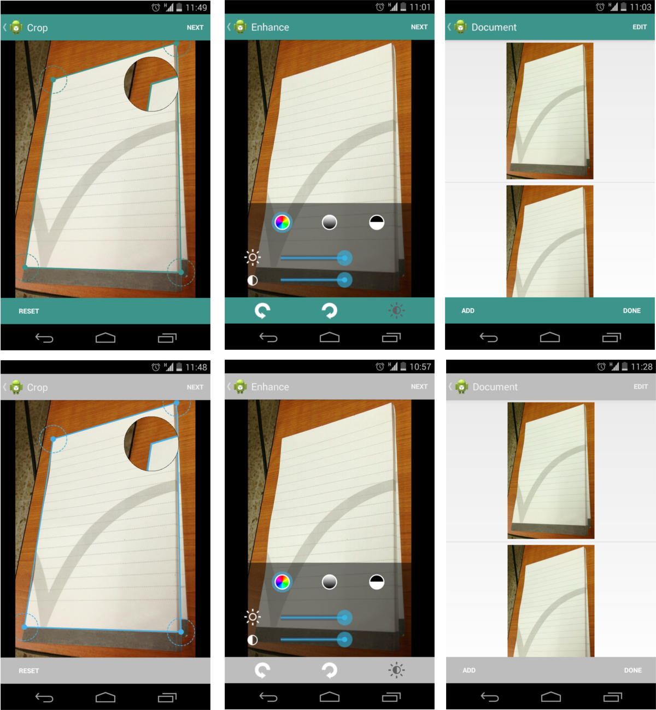

SECMLicense.verifyLicense(
"AppName",
getResources().openRawResource(R.raw.license),
getResources().openRawResource(R.raw.hash)
);
Note: If you don't verify the license, the SDK won't apply any of the operations to the images
<manifest xmlns:android="http://schemas.android.com/apk/res/android"
... >
<!-- Need this permission to open device's camera -->
<uses-permission android:name="android.permission.CAMERA" />
<!-- Need this permission to read photos from gallery -->
<uses-permission android:name="android.permission.READ_EXTERNAL_STORAGE" />
...
<application
... >
...
<activity android:name="com.simpleecm.imageprocessing.activities.CaptureDocumentActivity"
android:label="@string/optionsTitle"/>
<activity android:name="com.simpleecm.imageprocessing.activities.CaptureListActivity"
android:label="@string/documentTitle"/>
<activity android:name="com.simpleecm.imageprocessing.activities.CameraActivity"
android:theme="@android:style/Theme.NoTitleBar.Fullscreen"
android:label="@string/cameraTitle"/>
<activity android:name="com.simpleecm.imageprocessing.activities.DewarpActivity"
android:label="@string/cropTitle"/>
<activity android:name="com.simpleecm.imageprocessing.activities.EnhanceActivity"
android:label="@string/enhanceTitle"/>
</application>
</manifest>
SECMCaptureDocumentWizardBuilder mWizardBuilder = SECMCaptureDocumentWizardBuilder.getInstance(this);
mWizardBuilder.setActionBarBackgroundColorResource(R.color.blue);
For more information about wizard customization, go to the SECMCaptureDocumentWizardBuilder section in SDK Javadocs
public class MainActivity extends Activity implements OnWizardFinishListener {
private SECMCaptureDocumentWizardBuilder mWizardBuilder;
...
@Override
protected void onCreate(Bundle savedInstanceState) {
super.onCreate(savedInstanceState);
...
mWizardBuilder.setOnWizardFinishListener(this);
...
}
@Override
public void onWizardSucceed(SECMDocumentBuilder builder) {
}
@Override
public void onWizardCanceled(SECMDocumentBuilder builder, boolean isDocumentDeleted) {
}
}
mWizardBuilder.start();
onWizardCanceled(SECMDocumentBuilder builder, boolean wantToDelete) method.
The wantToDelete flag will specify if the user wants to delete the document. You can do so using the method SECMDocumentBuilder.deleteAll()
onWizardSucceed(SECMDocumentBuilder builder) method.void buildPDFDocument(OnExportPDFListener listener)void buildImagesDocument(SECMImageExportOperation.ExportFormat imageFormat, OnExportImagesListener listener)int getImagesCount()
SECMImage mSECMImage = new SECMImage(mBitmap);
To apply an operation to the image, use these methods:
void rotate(float degrees)void rotateFixed(SECMImageRotation rotation)void adjustBrightnessContrast(float brightness, float contrast)void convertToBlackAndWhite()void convertToGrayScale()void dewarpWithQuadrangle(SECMQuadrangle quadrangle)The SECMImage object is mutable, and applying the image operations will change it.
Once the operations have been applied to the SECMImage, one can obtain a Bitmap from it usingSECMImage.getBitmap() method. One can also use the SECMImageExporter to export a bitmap to a PDF, PNG or JPEG file.
setOnImageOperationListener(OnImageOperationListener listener) method to register a callback the operation.
Once the operations are completed, they notify it through the OnImageOperationListener.onFinished() method.
Also, the SDK provides the SECMImageExportOperation class to perform the exporting task as asynchronous operations.
One can register 2 different callbacks to it in order to notify that the export operation is finished:
setOnExportPDFListener(OnExportPDFListener listener).
This listener notify the operation finished through the OnExportPDFListener.onExportFinish(File file) method which gives access to the single exported PDF file that have all the images exported.
setOnExportImagesListener(OnExportImagesListener listener).
This listener notify the operation finished through the OnExportImagesListener.onExportFinish(List<File> files) method which gives access to all the exported images files.